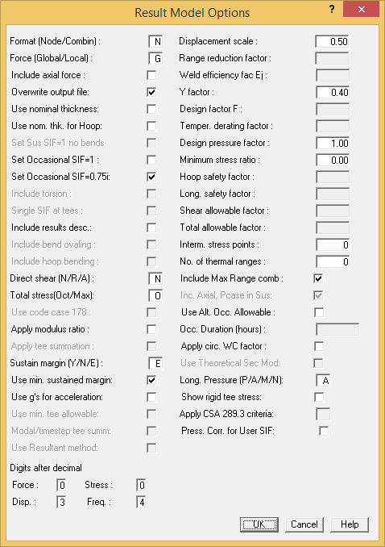

Graphical Review of Code Stresses
AutoPIPE provides a number of options for reviewing code stresses. The most commonly used option is the default stress ratio comparing the calculated stress to the stress allowable.
- Select Result > Result Options > Model.
- The Result Model Options dialog displays.
- Make sure the Sustain margin (Y/N/E) option is set to E.

- Click OK to save the change.